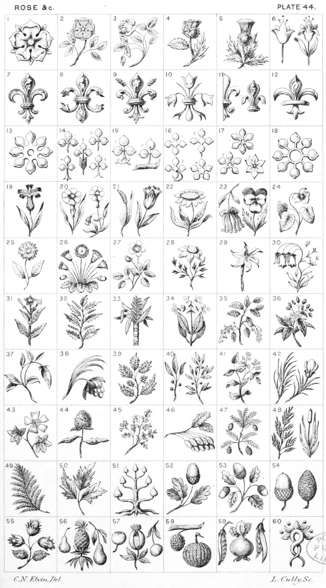

Plate 44.

Plate 44.html
- Rose Heraldic
- Rose Branch
- Garden Rose stalked and leaved
- Rose and Thistle conjoined
- Thistle slipped and leaved
- A Lily ; and a Lily stalked and
leaved
- Fleur-de-lis
- Double Fleur-de-lis
- Fleur-de-lis seeded
- Fleur-de-lis of lilies
- Demi Fleur-de-lis is divided per-pale. A Fleur-de-lis couped
- Antique Fleur-de-lis
- Caterfoil double and pierced
- Trefoils No. 1 generally used. 2.
Fitched. 3. Slipped raguled and
couped. 4. Triple slipped. 5.
Double slipped
- Trefoil double slipped raguled and
couped ; and a Trefoil the stalk
fixed fo a twig lying fesseways
- 1. Quatrefoil, or Quaterfoil. 2.
Slipped ; sometimes slipped as
No. 3. No. 4 Cinquefoil
- 1. Narcissus. 2. Cinquefoil pierced.
No. 3. Angenim
- Eight-foil, or double Quatrefoil
- Blue-bottle, or Cyanus
- Gilly Flower ; and a Pink, or Carnation
- Adders tongue; and a Tulip
- Marygold
- Columbine; and a Pansy, or Heart's
ease
- Violet stalked and. leaved
- Daisy stalked and leaved
- Margarette Daisy. Badge of Margaret consort of Hen. VL (From
the Shrewsbury Missal, Brit. Mus,)
- Bramble, or Wild Rose
- French Mary gold
- Flower of the Flag
- Bell flowers, or Blue-bell
- Tobacco plant
- Grain tree
- Sugar cane
- Tea-plant
- Cherry Branch fructed
- Cinnamon
- Almond slip
- Date branch fructed
- Holly sprig, or Sprig of Ilex
- Laurel sprig; and Laurel branch
- Watercresses
- Broom plant ; and Broom flower
- Mallow
- Bur of Burdock
- Rue
- Ash, or Ashen Keys
- Fir branch
- Reeds ; and a Bull-rush
- Fern
- Elder-branch
- Crequier Plant, or Wild-plum
- Oak slipped
- Oak branch
- Acorn ; and a Fir or Pine cone
- Nut or Hazel branch
- Pear ; a Pine Apple ; and Pear
slipped
- Apple ; a Pomegranate ; and Apple
slipped pendant
- Mulberry, and a Gourd
- Pea-cod; a Turnip ; and Bean-cod,
or pod
- Mandrake